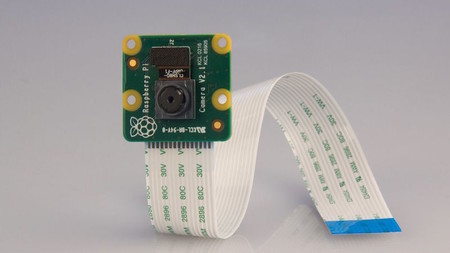
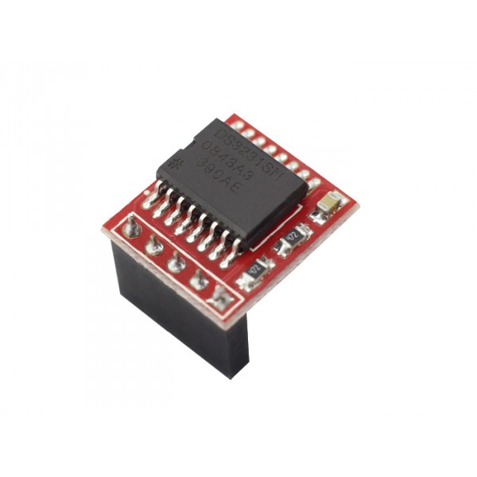
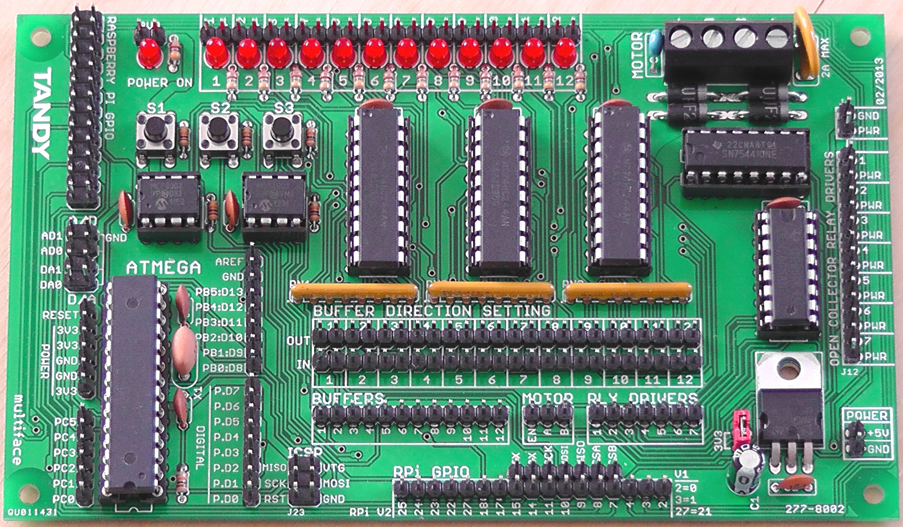

Empleamos esto cuando a un texto le queremos dar muchos estilos que están en clases distintas.
Ejemplo:
La Raspberry PI 2 modelo B, lanzada en 2014, es el primer modelo que no incluye el mismo
procesador usado en los tres anteriores (Raspberry PI 1 modelo A, modelo B y modelo B+):
se sustituye por uno de la misma marca, pero de modelo BCM2836. Pasa de ser un núcleo a cuatro,
y de 700MHz a 900MHz. Emplea la misma gráfica, dobla la cantidad de memoria RAM, pasando de 512MB a 1GB
aproximadamente. Esta memoria está compartida con la gráfica. También incluye 40 pines GPIO, y mantiene
los cuatro puertos USB. Suprime la conexión RCA.
Usamos esto cuando tenemos dos etiquetas diferentes con la misma clase y queremos que, con esa misma
clase, aplicar estilos a una etiqueta y a otra no. Ejemplo:
Fue anunciada en junio de 2019. Los puertos HDMI de tamaño completo se cambian por dos puertos microHDMI.
Cuenta con la capacidad de manejar una pantalla a 4K a 60 Hz, o dos pantallas 4K a 30 Hz. Se ha incluido por
primera vez USB 3.0, y el puerto Ethernet ya no está limitado a 300 Mbps. Tiene un procesador Broadcom nuevo
hasta tres veces más eficiente que el anterior.
Empleamos esto cuando tenemos la misma clase dentro de la misma etiqueta en dos sitios distintos. Por ejemplo,
tenemos en una lista desordenada una etiqueta span con una clase, y luego dentro de una etiqueta de párrafo otra
etiqueta span con esa misma clase, y queremos que tengan mismos y diferentes estilos. Ejemplo:
El Raspberry PI usa principalmente sistemas operativos GNU/Linux. Raspbian, una distribución derivada de
Debian que está optimizada para el hardware de Raspberry PI, se lanzó durante julio de 2012 y es la distribución
recomendada por la fundación para iniciarse.
Esto sirve para cuando queremos aplicar los mismos estilos a dos etiquetas diferentes sin tener que usar clases.
Para que funcione, debemos escribir en style lo siguiente: etiqueta, etiqueta.
Ejemplo:
Aparte de los modelos normales, la Fundación Raspberry también ha sacado otra gama de placas denominadas Raspberry Pi Zero.
Estas son mucho más pequeñas y menos potentes que sus hermanas, pero es precisamente su atractivo, menos gasto y un precio mucho menor.
Es un 40% más potente que el primer modelo de Raspberry. Tiene un microprocesador Broadcom BCM2835, que funciona a 1GHz con un solo núcleo.
Posee 512MB de RAM, y comparte la gráfica VideoCore IV. Debido a su tamaño sustituye el puerto HDMI por MiniHDMI, manteniendo así las prestaciones.
Tampoco usa USB estándar, sino que tiene dos MicroUSB, uno de alimentación y otro de datos.
Es la sucesora de la Pi Zero, la W es por Wireless, ya que la única novedad de esta placa con respecto a su antecesora es la inclusión de Wi-Fi y Bluetooth,
el precio asciende a once dólares.
Las especificaciones siguen siendo las mismas que la Zero W, aparte de la inclusión de un conector presoldado GPIO de 40 pines.
Esto se usa para definirle un estado especial a un elemento ó elementos con clases, id o solo escribiendo la etiqueta.
Podemos definir numerosos estados, de los cuales podemos destacar 3:
 En mayo de 2012, la fundación informó de que se estaba experimentando con un módulo de cámara para Raspberry Pi, el prototipo usaba un sensor de 14 megapíxeles, y se conectaba al puerto CSI de la placa mediante un cable plano flexible. El prototipo final constaría de un sensor de 5 megapíxeles y podría grabar vídeos a !080p y 30fps. Las dimensiones del módulo son 25 x 20 x 9 mm, y para ponerlo a funcionar, se tiene que activar en el menú raspi-config de Raspbian.
 los Raspberry Pi no poseen un reloj interno que conserve la hora y fecha al ser apagados: para ello cada sistema operativo hace uso del Protocolo de Tiempo de Red, de lo contrario la fecha mínima por defecto almacenada es 30 de noviembre de 1999. Por ello otros fabricantes han diseñado pequeñas tarjetas con un chip DS1302 y una batería de litio modelo CR2032 que conectan por medio de puerto GPIO y con la carga previa en memoria del software controlador para dicho dispositivo consultan la fecha y hora al arrancar y luego cada cierto tiempo durante su funcionamiento.
 Por ejemplo la Gertboard, que ha sido creada con propósito educativo, sirve para hacer uso del puerto GPIO y poder interactuar con leds, interruptores, señales analógicas, sensores, y otros dispositivos. También incluye un controlador opcional para Arduino para poder interactuar con el Raspberry Pi.